Gonin Gora · Kaduna, Nigeria
Every grain, measured right,
every single time.
We source millet, guinea corn, beans, rice, spices and raw foodstuff straight from Kaduna's markets — sorted, cleaned, and freshly milled to order. Wholesale, retail and home delivery. Delivered across Kaduna State, shipped anywhere in Nigeria.
Updated every market day
Today's Market Board
Tap the items you want, set your quantity, then send your order straight to us on WhatsApp. Prices shown are per unit — final total is confirmed before we pack.
Three steps, no stress
From market board to your door
Fill your basket
Tap through today's board and set quantities in mudu, derica or kg — mix grains, legumes and spices in one order.
Confirm on WhatsApp
Your order list is sent straight to our line. We confirm final price, stock and your delivery address in minutes.
We pack & move it
Pickup at Gonin Gora, same-day delivery around Kaduna, or nationwide courier for orders outside the state.
Coverage
Kaduna first. Nigeria too.
Within Kaduna State
Same-day and next-day delivery on retail orders — riders move daily around the metro and nearby towns.
Anywhere in Nigeria
Bulk and wholesale orders travel by trusted logistics partners to Lagos, Abuja, Port Harcourt and beyond — ideal for caterers, shops and family stock-ups. 2–5 working days, tracked.
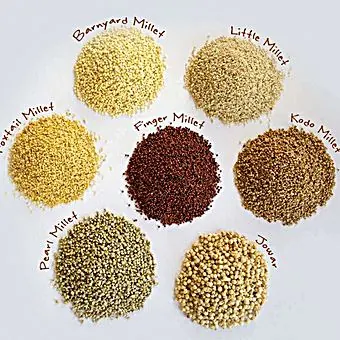
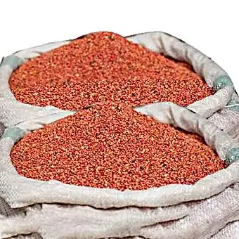
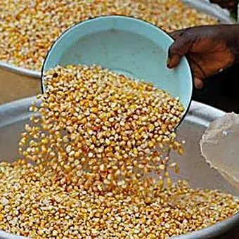
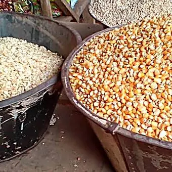
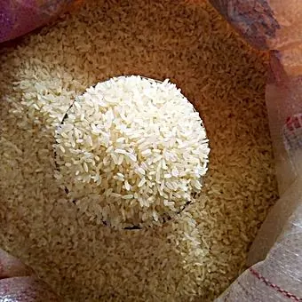
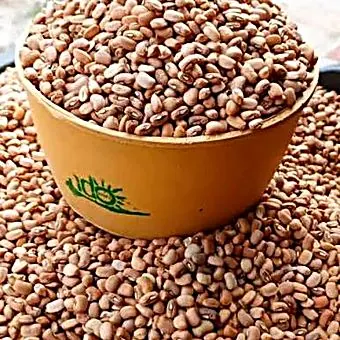
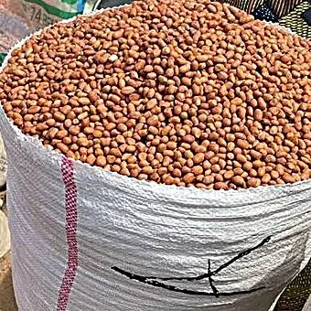
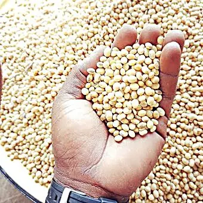
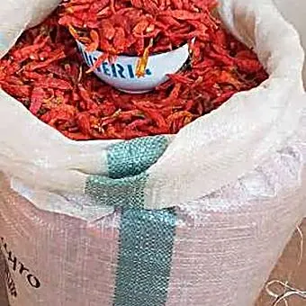
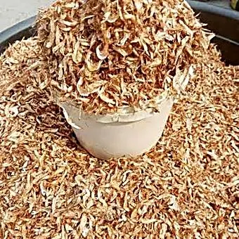
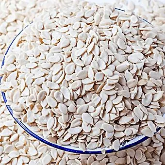
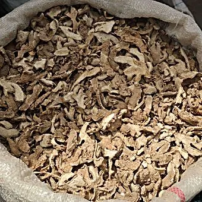
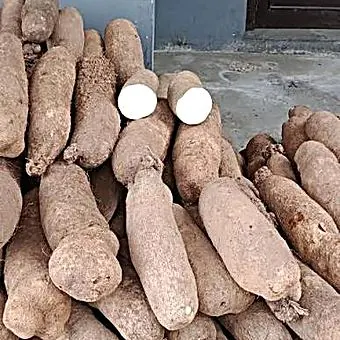
Our Story
One stop for your kitchen and your wallet.
HenryTomz Foodstuff Hub started in Gonin Gora, Kaduna — weighing out millet and beans by the mudu for neighbours who wanted honest measure and clean produce. That's still the standard: every bag is sorted by hand, every scale is checked, and every spice is ground fresh, not stockpiled.
We later added home delivery and bulk ordering, because getting proper foodstuff shouldn't mean a whole morning at the market. Today we supply households, caterers and small shops across Kaduna State — wholesale, retail and home delivery — and ship raw foodstuff to families and businesses across Nigeria who want the real taste of home.
From our customers
What people say after their first order
"I ordered millet and dry pepper for my shop and it arrived cleaner than what I usually get at the local market. Measure was exact too."
"Living in Lagos, it's hard to find proper guinea corn and crayfish like back home. This is the first delivery that actually tasted right."
"I run a small canteen and now order beans and groundnut in bulk every two weeks. WhatsApp ordering makes restocking so quick."